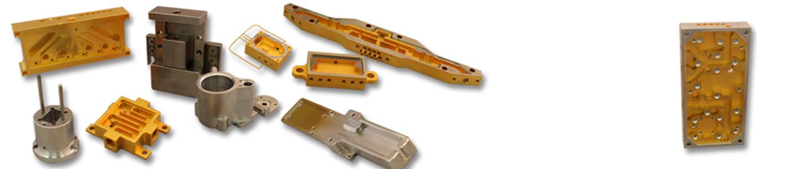
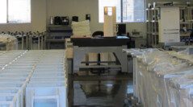

01 / CORE CAPABILITY
Precision Machining
CNC milling and turning for custom and production parts, with prototype machining support for early-stage and lower-volume work.
Explore machining ↗01
From precision-machined components to complete mechanical assemblies, Brooks helps turn demanding specifications into dependable production.
Brooks combines machining expertise, practical problem-solving, and hands-on production support to help keep your project moving—from first article through repeat manufacturing.
Talk through your project ↗Bring us a component, a subassembly, or a more involved build. We work with your team to find a reliable path from requirements to finished product.
CNC milling and turning for custom and production parts, with prototype machining support for early-stage and lower-volume work.
Explore machining ↗A coordinated manufacturing partner for components, production needs, and the details that keep work flowing.
Explore manufacturing ↗Mechanical subassemblies and turnkey builds that bring multiple pieces together into a more complete solution.
Discuss your build ↗Experience across aluminum, Kovar, brass, copper, stainless steel, and other materials selected to meet the job.
Discuss materials ↗
Quality starts well before final inspection. It is built into the process, the communication, and the care taken at every stage of the job.
Brooks supports teams working in demanding technical environments where dependable components and consistent workmanship are essential.
Tell us what you're building ↗Components and assemblies built to customer requirements.
Precision parts for technically exacting applications.
Manufacturing support for equipment and laboratory systems.
Custom components for specialized equipment and systems.
Our quality approach is woven into the work—from planning and purchasing to machining, assembly, and delivery. We work to the applicable customer requirements and workmanship standards for each project.
Brooks states ISO 9001:2015 certification and workmanship to IPC/WHMA-A-620 and J-STD-001 standards. Confirm current scope and applicability for your project with our team.

Privately held and founded in 1979, Brooks brings decades of manufacturing experience to customer partnerships. Our 16,000-square-foot facility is located just off Route 495 in Chelmsford, Massachusetts.
Let's discuss your project ↗Share a few details and we'll help identify the right next step. For a formal quote, include drawings, specifications, material requirements, and estimated quantities when available.
A quick guide to help you prepare a useful first conversation.
Concept tool only. It does not calculate pricing or submit a request.